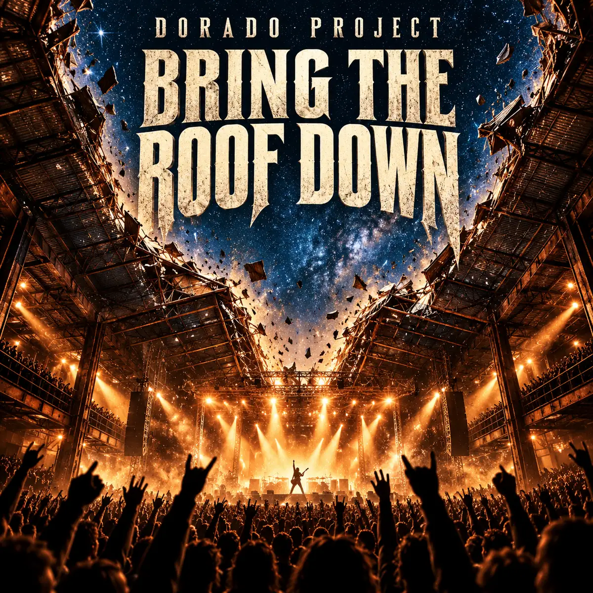

NEW SINGLE · IN PRODUCTION
Bring the Roof Down
Hard rock / Stadium rock
An English-language stadium hard rock anthem about shaking off the working week and finding your voice in a roaring crowd. Conceived around a sharp guitar hook, gritty vocals, pounding drums and a chorus made to sing together.
Spotify link to follow when the track is available.